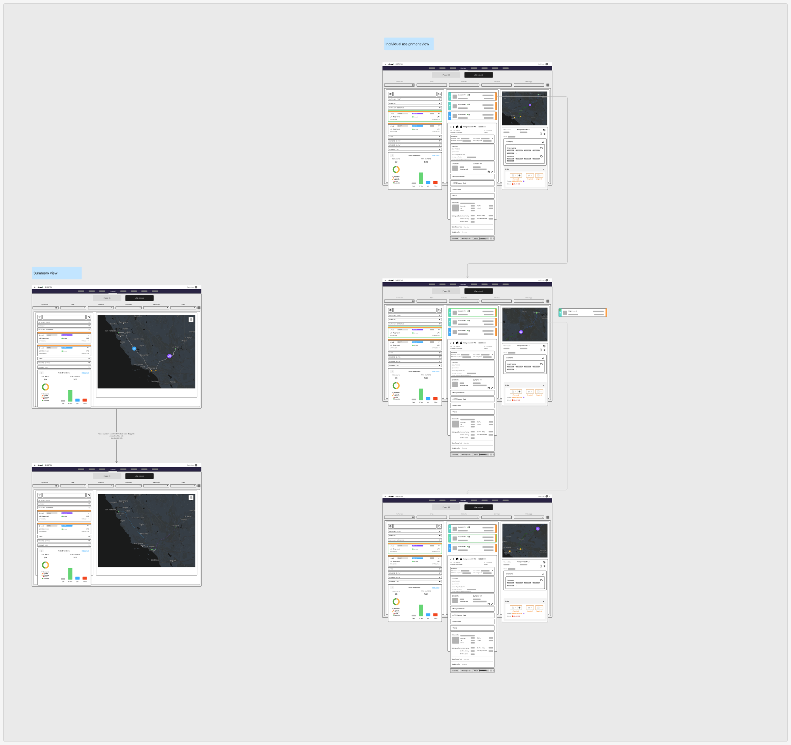
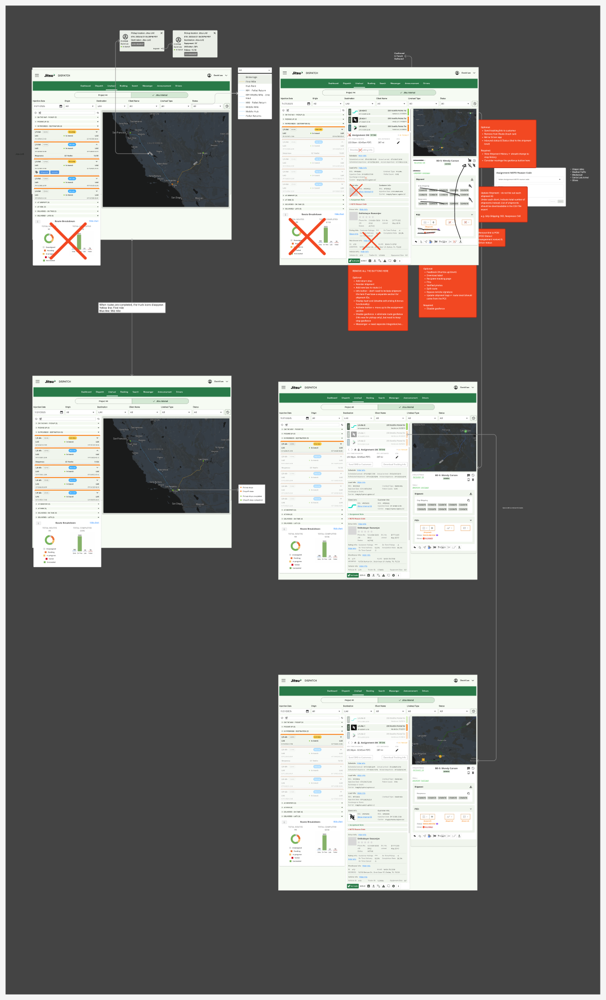
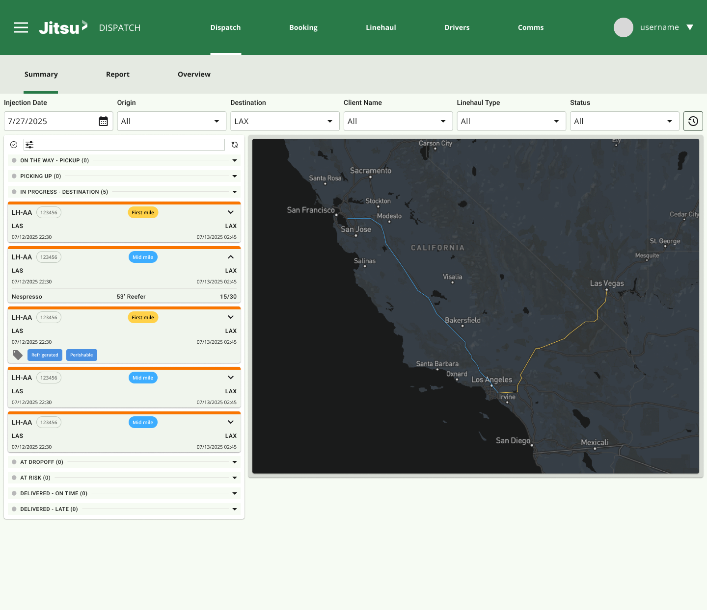
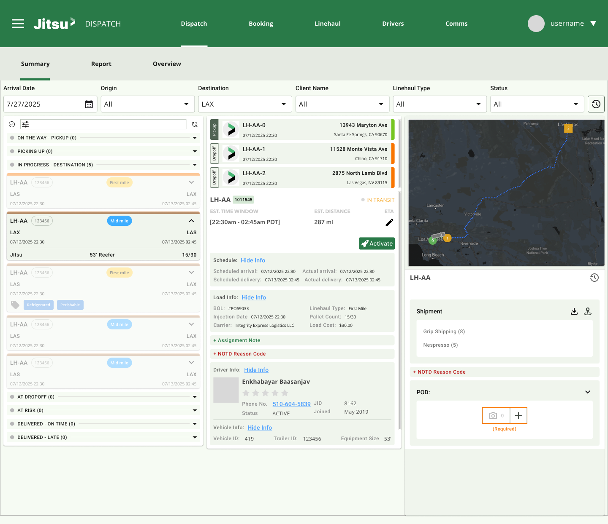
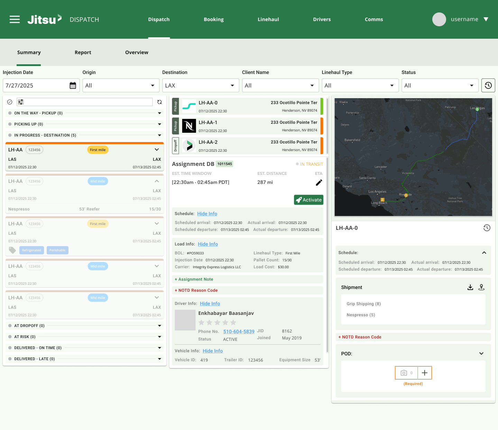
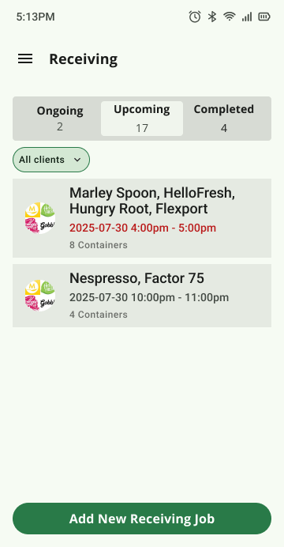
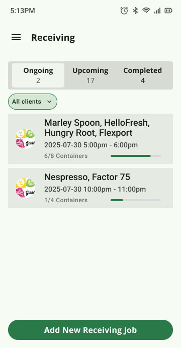
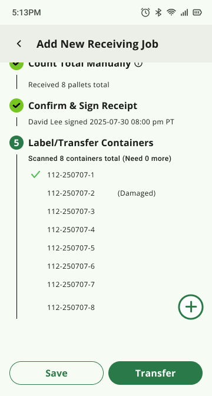

This project is under NDA. Enter the password to view.
Two connected products built for both ends of every long-haul run — a web dispatch tool for coordinators tracking live assignments, and a mobile receiving flow that captures an accurate driver arrival timestamp the moment the truck shows up.
Jitsu's linehaul network moves parcels between sorting hubs on contracted long-haul trucks — dozens of assignments a day, each with a driver, a route, a manifest, and a delivery window. Coordinators were tracking all of this across Slack, spreadsheets, and manual calls to the floor. There was no single live view of what was in motion, where each truck was, or what had arrived at the destination hub.
On the receiving side, warehouse workers had an existing BOL flow — but it only timestamped the moment they acknowledged the volume offloaded, not when the driver actually arrived. That gap made it impossible to measure driver punctuality or resolve disputes about late arrivals.
The goal was to close both gaps: a live dispatch interface for coordinators pulling real-time GPS data from Project44 and manifest data from NetSuite, and an updated mobile receiving flow that captures a precise driver arrival timestamp before any other step can proceed.
Part 1 — Linehaul Dispatch · Web
Working directly with the linehaul ops team, a few patterns surfaced quickly:
The first design question was layout: how much space should the summary board hold vs. the assignment detail? I explored three approaches in FigJam before aligning with the team:


The final design is a two-panel layout: a persistent summary board on the left with inline filters and a live map, and a three-section detail panel that opens when a coordinator selects any assignment. Everything a coordinator needs to monitor, act on, and escalate is reachable from this single surface.
The left panel lists all active assignments with filters for injection date, origin, destination, client name, linehaul type, and PO status pinned at the top. The map alongside pulls live truck positions from Project44 — coordinators see the list and spatial context simultaneously. Color-coded status chips (On Time, At Risk, Late, Delivered) make the board scannable in seconds without opening a single assignment.
Selecting an assignment opens the middle column: all stops in sequence (pickup and dropoff) with color indicators for in-progress, completed, or failed; route ETA and estimated distance; a collapsible schedule section showing both the planned arrival/departure window and actual timestamps; and load info — BOL number, carrier, linehaul type, pallet count, and load cost. A NOTD reason code dropdown with an open-text notes field lets coordinators log delay context on the spot.
The right column surfaces the data needed for resolution and audit: a full event history, a stop-level map view, a shipment breakdown by client name with counts (and a CSV export for Middle Mile loads), and a POD section displaying BOL proof-of-delivery images the driver submitted at the pickup stop. Driver info (name, phone, status, JID) and vehicle info (vehicle ID, trailer ID, equipment size) are available in collapsible sections below.



Part 2 — Warehouse Receiving · Mobile
The existing receiving flow in the warehouse app logged the BOL acknowledgement as the record of receipt. But that timestamp was taken at step 3 or 4 — well after the driver had already pulled up and unloading had begun. It reflected when the worker got to the paperwork, not when the truck arrived.
To get an accurate driver arrival timestamp, we added a mandatory first step: capture the driver's license before anything else can proceed. The moment that photo is taken becomes the official arrival time stored on the backend. The new 5-step flow is: Capture Driver License → Upload BOL → Count Pallets → Confirm & Sign → Label / Transfer Containers.
The receiving job screen is a linear stepper — steps must be completed in order for new jobs, but all steps are accessible for updates. The step header shows completion state at a glance: checkmark for done, number for in progress.
The worker photographs the driver's license. The capture timestamp becomes the official driver arrival time — stored on the backend alongside the user who took it. The step header subtitle shows the photo count, the capturing user's name, and the timestamp on all subsequent views, giving supervisors a full audit trail at a glance.
If the driver won't share their license, the worker taps "Driver Refused — capture truck photo instead" and photographs the truck. The truck photo satisfies the step requirement and records the same arrival timestamp. Neither path can be skipped — Step 1 must be completed before the flow can move forward. A fallback link for "I did not capture driver details in time" exists for edge cases where the worker missed the window entirely.
Steps 2–5 follow the existing receiving workflow: photograph the Bill of Lading (or mark it unavailable), enter the manual pallet count (or switch to "Packages" for floor-loaded trucks), sign the digital receipt, and scan each inbound container to create a receiving record. A mismatch dialog prompts for an over/short count and note if the final scan count doesn't match the manual pallet entry from Step 3.



The dispatch tool reinforced that a coordinator's real job is triage, not monitoring. The design impulse is to surface everything — all assignments, all data fields, all statuses at once. What coordinators actually needed was a surface that let them quickly find what needed attention and act without losing their place. The fly-out detail panel rather than a separate navigation page was the key decision that made the interface feel fast instead of fragmented.
The receiving DL capture feature looked like a minor addition — one new step at the top of an existing flow. The complexity was entirely in the exception paths: the driver who refuses, the worker who missed the capture window, the partial image state from a previous attempt. Mapping those edge cases explicitly before any implementation began prevented three or four rounds of revision after handoff to engineering.
Together these two products form one auditable chain from departure to delivery: the coordinator tracking a truck in transit, and the warehouse worker logging its arrival with a timestamped photo. Designing both sides in the same cycle kept the data model consistent and meant the handoff between systems required no extra reconciliation work.